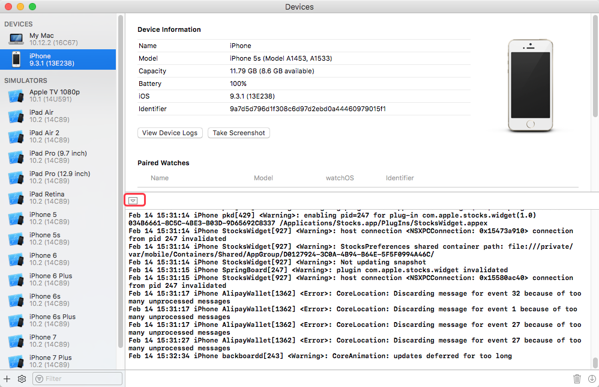

查看 iOS 设备System Log方法
- syslogd to /var/log/syslog (Cydia安装，已不适用)
- idevicesyslog (github开源，有些问题)
- Xcode -> Deveices -> Deice -> 左下角三角形按钮
- socat (越狱设备上查看)
本文主要针对后两个做介绍。
socat介绍
安装
iPhone上打开Cydia，搜索SOcket CAT安装。
命令行开启
通过ssh登陆到手机 openSSH，然后终端输入命令
1 | iPhone:~ root# socat - UNIX-CONNECT:/var/run/lockdown/syslog.sock |
使用
- run
help
1 | iPhone:~ root# socat - UNIX-CONNECT:/var/run/lockdown/syslog.sock |
- run
watch
查看全部 iOS 设备日志
- 根据PID筛选日志
1 | iPhone:~ root# ps aux | grep WeChat |
mobile的PID 1230
拿到微信PID后，查看微信日志
1 | iPhone:~ root# socat - UNIX-CONNECT:/var/run/lockdown/syslog.sock |
这样，我们就可以调试我们自己写的Tweak了，看它的日志了。
- 离开socat
run quit
Xcode 查看
Xcode -> Devices -> iOS 设备
